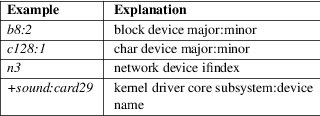

udev_device_new_from_syspath, udev_device_new_from_devnum, udev_device_new_from_subsystem_sysname, udev_device_new_from_device_id, udev_device_new_from_environment, udev_device_ref, udev_device_unref − Create, acquire and release a udev device object
#include <libudev.h>
|
struct udev_device *udev_device_new_from_syspath(struct udev *udev, const char *syspath); | |
|
struct udev_device *udev_device_new_from_devnum(struct udev *udev, char type, dev_t devnum); | |
|
struct udev_device *udev_device_new_from_subsystem_sysname(struct udev *udev, const char *subsystem, const char *sysname); | |
|
struct udev_device *udev_device_new_from_device_id(struct udev *udev, const char *id); | |
|
struct udev_device *udev_device_new_from_environment(struct udev *udev); | |
|
struct udev_device *udev_device_ref(struct udev_device *udev_device); | |
|
struct udev_device *udev_device_unref(struct udev_device *udev_device); |
udev_device_new_from_syspath(), udev_device_new_from_devnum(), udev_device_new_from_subsystem_sysname(), udev_device_new_from_device_id(), and udev_device_new_from_environment() allocate a new udev device object and returns a pointer to it. This object is opaque and must not be accessed by the caller via different means than functions provided by libudev. Initially, the reference count of the device is 1. You can acquire further references, and drop gained references via udev_device_ref() and udev_device_unref(). Once the reference count hits 0, the device object is destroyed and freed.
udev_device_new_from_syspath(), udev_device_new_from_devnum(), udev_device_new_from_subsystem_sysname(), and udev_device_new_from_device_id() create the device object based on information found in /sys/, annotated with properties from the udev−internal device database. A syspath is any subdirectory of /sys/, with the restriction that a subdirectory of /sys/devices (or a symlink to one) represents a real device and as such must contain a uevent file. udev_device_new_from_devnum() takes a device type, which can be b for block devices or c for character devices, as well as a devnum (see makedev(3)). udev_device_new_from_subsystem_sysname() looks up devices based on the provided subsystem and sysname (see udev_device_get_subsystem(3) and udev_device_get_sysname(3)) and udev_device_new_from_device_id() looks up devices based on the provided device ID, which is a special string in one of the following four forms:
Table 1. Device ID strings

udev_device_new_from_environment() creates a device from the current environment (see environ(7)). Each key−value pair is interpreted in the same way as if it was received in an uevent (see udev_monitor_receive_device(3)). The keys DEVPATH, SUBSYSTEM, ACTION, and SEQNUM are mandatory.
On success, udev_device_new_from_syspath(), udev_device_new_from_devnum(), udev_device_new_from_subsystem_sysname(), udev_device_new_from_device_id() and udev_device_new_from_environment() return a pointer to the allocated udev device. On failure, NULL is returned, and errno is set appropriately. udev_device_ref() returns the argument that it was passed, unmodified. udev_device_unref() always returns NULL.
udev_new(3), udev_device_get_syspath(3), udev_device_has_tag(3), udev_enumerate_new(3), udev_monitor_new_from_netlink(3), udev_list_entry(3), systemd(1),